Part analysis
In planex2d, a measurement is a function of a part. part.Measure(f) calls it, and Measure(f, id=...) stores it on a constraint sketch, which evaluates it again after every Update. A design study then becomes a loop, and an optimization a call to SciPy. A measurement that returns its samples can also be drawn as a map with px.PlotField(f, part). The analyses in planex.measurements are written exactly this way: wall thickness, clearance, Hausdorff distance, hydraulic diameter
and torsion constant. So are the checks of your own trade on this page, such as the largest end mill that can cut a part or the hottest spot of a cold plate, a dozen lines each.
Every number on this page is checked against a closed form where one exists, and sizes are in millimeters.
[1]:
import math
import numpy as np
from scipy.optimize import minimize
import planex as px
import planex.measurements as pm
A flange that measures itself
The example is a flange of diameter 120 with a bore of 40, drawn as a constraint sketch with the rim and the bore fixed. One bolt hole of diameter 8 sits on the pitch circle of radius 40, with the dimensions pcd and d, and is patterned around the center (Figure 1a). pm.MinThickness() rolls the largest disc that fits along the whole boundary, and at every sample, the wall is the diameter of the disc that touches there. Drawn as a map, every point takes the value of the largest disc
that covers it, and the line marks the thinnest wall (Figure 1b).
[3]:
sk = px.Sketch(id="flange")
sk.Circle(0, 0, 60, px.Fix, id="rim", name="rim")
sk.Circle(0, 0, 20, px.Fix, id="bore", name="bore")
sk.Circle(40, 0, 4, id="bolt", name="bolt")
sk.Constrain("bolt.center", px.H, px.Coincident)
sk.Constrain(sk.origin, "bolt.center", px.Distance, 40, id="pcd")
sk.Constrain("bolt", px.Diameter, 8, id="d")
sk.CircularPattern("bolt", sk.origin, 6)
plate = sk.Face(id="plate")
Three walls compete: from a hole to the rim, from a hole to the bore, and the ligament between two neighboring holes, 2 r sin(π/n) − d for n holes on a pitch radius r. thinnest is this closed form:
[4]:
def thinnest(n, r=40):
return min(60 - r - 4, r - 4 - 20, 2 * r * math.sin(math.pi / n) - 8)
print(sk.status, sk.dimensions)
print("thinnest wall", plate.Measure(pm.MinThickness()), "exact", thinnest(6))
full {'pcd': 40.0, 'd': 8.0, 'CircularPattern.1.angle': 60.0, 'CircularPattern.1.count': 6}
thinnest wall 15.99999999999817 exact 16
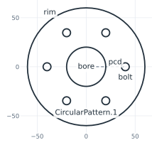
(a) The sketch and its ids
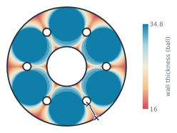
(b) The wall thickness map
Picking what to measure
A check has to find what it measures, and everything has an id for that: the sketch (flange), its elements (flange.bolt, and the pattern’s copies flange.CircularPattern.1.Circle.1 to .5), the face (plate), and below it every edge, vertex and face, such as plate.Circle.5. Selectors are calls on an object, a sketch included, or on its edges, faces and vertices:
by id, by
name=and bykind=;by
near=a point or another object, such as the sketch’s bolt circle, which counts as its center;by conditions on each element’s center in
[], written withpx.x,px.y,px.z(3D) andpx.h,px.v(the plane) and combined with&,|and~; the center of an arc or a circle is the center of its circle;along the topology:
faces,edgesandoutlinestep from edges to the faces they bound and back.
The example selects the bolt holes by name, the circles centered in the first quadrant, and the outline of the face bounded by the circle nearest to the sketch’s bolt (Figure 2).
[6]:
bolts = plate.edges(name="bolt")
first_quadrant = plate.edges(kind="circle")[(px.x > 0) & (px.y > 0)]
outline = plate.edges(near=sk("bolt")).faces.outline
print(len(bolts), first_quadrant.ids, outline.ids)
6 ['plate.Circle.3', 'plate.Circle.4'] ['plate.Circle.1']
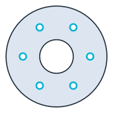
(a) edges(name="bolt")
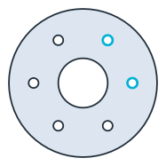
(b) Circles centered at x > 0 and y > 0
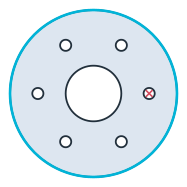
(c) Near the bolt, then its face's outline
Min, Max and Sorted order by a measure ("length", "area", "radius") or along an axis or a direction (px.X, px.H, (1, 1)). As in the sketch, an edge’s id followed by .start, .end, .mid or .center names a point. A full circle has no ends, only its .center.
[8]:
print(plate.edges(kind="circle").Max("radius").ids, bolts.Sorted(px.X).ids[:2])
print(plate("Circle.5.center")[0])
['plate.Circle.1'] ['plate.Circle.6', 'plate.Circle.7']
<point plate.Circle.5.center (-20, 34.641)>
Checks that follow the sketch
Measure(f, id=...) stores a measurement on the sketch. measures evaluates the standard measurements and the stored ones when it is read, never during Update, so a sweep pays only for what it reads. A stored measurement can come from planex.measurements or be a function of your own. The example stores three:
the thinnest wall,
pm.MinThickness();the clearance between the bore and a bolt hole,
pm.Clearance("bore", "bolt");edge_distance, the distance e from a bolt hole’s center to the outline, divided by the sketch’s own dimensiond. For a bolt hole near an edge, e/d should be at least 1.5. The function finds the hole in the sketch and the outline of the face the hole lies in.
[9]:
def edge_distance(sketch, bolt="bolt"):
hole = sketch(bolt)
rim = sketch.Face().edges(near=hole).faces.outline
return rim.Wire().Distance(hole.center) / sketch["d"]
sk.Measure(pm.MinThickness(), id="wall")
sk.Measure(pm.Clearance("bore", "bolt"), id="bore to bolt")
sk.Measure(edge_distance, id="e/d")
for key in ("area", "wall", "bore to bolt", "e/d"):
print(key, sk.measures[key])
area 9751.50359674272
wall 15.99999999999817
bore to bolt 16.0
e/d 2.5
To find how many bolts fit, Update sets the pattern’s count, and the stored wall is read back each time. More bolts make the ligaments thinner. With a minimum wall of 6, 17 bolts fit (Figure 3), and the measured walls follow the closed form for every count (Figure 4).
[10]:
counts = list(range(4, 25))
walls = []
for n in counts:
sk.Update({"CircularPattern.1.count": n})
walls.append(sk.measures["wall"])
fits = max(n for n, w in zip(counts, walls) if w >= 6)
print("largest difference to the closed form", max(abs(w - thinnest(n)) for n, w in zip(counts, walls)))
print(fits, "bolts fit")
largest difference to the closed form 2.353672812205332e-12
17 bolts fit
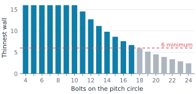
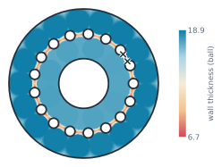
The same works for the pitch circle. Moved out to a radius of 49, the holes come too close to the rim, since e/d = (60 − r) / 8:
[12]:
for r in (40, 46, 49):
e_d = sk.Update({"pcd": r}).measures["e/d"]
print("pcd", r, "e/d", e_d, "exact", (60 - r) / 8, "ok" if e_d >= 1.5 else "too close to the rim")
sk["pcd"] = 40
pcd 40 e/d 2.5 exact 2.5 ok
pcd 46 e/d 1.75 exact 1.75 ok
pcd 49 e/d 1.375 exact 1.375 too close to the rim
Checks of your own trade
A measurement is any function f(obj, **params) that returns a value. One stored on a sketch is called with the sketch, and one given to px.PlotField is called with the face. A measurement that can be drawn also accepts plot=True and then returns a dictionary of its samples:
points: the sample points, as a list of (h, v) or an (n, 2) array;values: one value per point;label: the name of the color bar;value: the measured value;marks: a list of (point, text), such as the point where the value is reached.
Nothing else is required, because the selectors find what a check needs. See Measurements for drawing them.
Machining: the largest end mill
An end mill cannot cut an inner corner tighter than its own radius, and it cannot cut a sharp inner corner at all. largest_end_mill reads that from the geometry:
a re-entrant corner without a radius, with more than 180° of material around it, means that no end mill fits;
otherwise, the smallest concave arc or circle decides, that is, one with its free side towards its center, such as a fillet in an inner corner or a hole.
The example is the bracket from Automatic ids, 40 × 30 with legs 10 thick, which has a sharp notch as drawn (Figure 5a). With a fillet of radius 5, an end mill of 10 fits (Figure 5b), and in the flange, the bolt holes allow at most 8 (Figure 5c).
[13]:
def largest_end_mill(part):
if any(v.angle > 180 and v.radius is None for v in part.vertices):
return 0.0
concave = []
for e in [*part.edges(kind="arc"), *part.edges(kind="circle")]:
m, c = e.midpoint, e.edge.center
inward = (m.h + 1e-6 * (c.h - m.h), m.v + 1e-6 * (c.v - m.v))
if not part.Contains(inward):
concave.append(e.edge.radius)
return 2 * min(concave, default=math.inf)
s = px.QuickSketch().Line(40).Turn(90).Line(10).Turn(90).Line(30)
s.Turn(-90).Line(20).Turn(90).Line(10).Close()
sharp = s.Face()
bracket = s.Fillet("Point.4", 5, id="fillet", name="fillet").Face()
print([largest_end_mill(part) for part in (sharp, bracket, plate)])
[0.0, 10.0, 8.0]
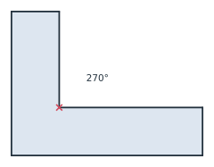
(a) A notch: no end mill fits
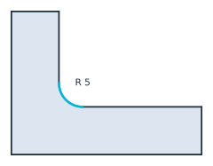
(b) A fillet of radius 5: at most 10
(c) The bolt holes: at most 8
Thermal: the hottest spot of a cold plate
The example is a cold plate of 120 × 80 with four cooling channels of diameter 10. One channel is drawn at (a, b) and mirrored about both axes, so that the copies follow it. Under a uniform heat load, a quick proxy for the hottest spot is the point farthest from every channel, at the end of the longest heat path. HotSpot measures that distance on a grid of n × n points, and with plot=True it returns all of them. An odd n puts the corners, the center and the edge midpoints on the grid,
which is where the farthest point of this symmetric layout lies, so here the grid’s maximum is exact.
[15]:
cp = px.Sketch(id="cold plate")
cp.Move((-60, -40), px.Fix).Rectangle(120, 80, id="outline")
cp.Constrain("outline.Line.1", px.Horizontal)
cp.Constrain("outline.Line.1", px.Distance, 120, id="width")
cp.Constrain("outline.Line.2", px.Distance, 80, id="height")
cp.Circle(20, 12, 5, id="channel", name="channel")
cp.Constrain("channel", px.Diameter, 10)
cp.Constrain("channel.center", px.V, px.Distance, 20, id="a")
cp.Constrain("channel.center", px.H, px.Distance, 12, id="b")
cp.Mirrored(["channel"], px.V)
cp.Mirrored(["channel", "Mirrored.1.channel"], px.H)
def HotSpot(channels="channel", n=41):
def hot_spot(obj, plot=False, **_):
part = obj.Face() if isinstance(obj, px.Sketch) else obj
cooled = px.Compound(px.Wires(part.edges(name=channels)))
(x0, y0), (x1, y1) = part.bounding_box
x, y = np.meshgrid(np.linspace(x0, x1, n), np.linspace(y0, y1, n))
points = np.column_stack([x.ravel(), y.ravel()])
points = points[part.Contains(points)]
values = cooled.Distance(points)
far = values.argmax()
if not plot:
return values[far]
return {"points": points, "values": values, "value": values[far],
"label": "distance to a channel", "marks": [(tuple(points[far]), "hot")]}
return hot_spot
cp.Measure(HotSpot(), id="hot spot")
guess = cp.Face()
exact = max(math.dist(c, (20, 12)) for c in [(0, 0), (60, 0), (0, 40), (60, 40)]) - 5
print("first guess", cp.measures["hot spot"], "exact", exact)
first guess 43.826222462934815 exact 43.82622246293481
Stored on the sketch, the check serves as an objective for SciPy. The optimizer moves the channels through the dimensions a and b and reads the stored measurement after every Update. It ends where every channel sits in the middle of its quarter of the plate, a = 30 and b = 20, the known optimum, and the longest heat path drops by 29 % (Figure 6).
[16]:
def objective(ab):
return cp.Update({"a": ab[0], "b": ab[1]}).measures["hot spot"]
best = minimize(objective, [20, 12], method="Nelder-Mead", options={"xatol": 1e-6, "fatol": 1e-9})
optimum = math.hypot(30, 20) - 5
print("a", best.x[0], "b", best.x[1], "after", best.nfev, "evaluations")
print("hot spot", best.fun, "exact", optimum, "shorter by", round(100 * (1 - best.fun / exact)), "%")
a 30.000000016029325 b 20.000000000498638 after 149 evaluations
hot spot 31.055512768253692 exact 31.055512754639892 shorter by 29 %
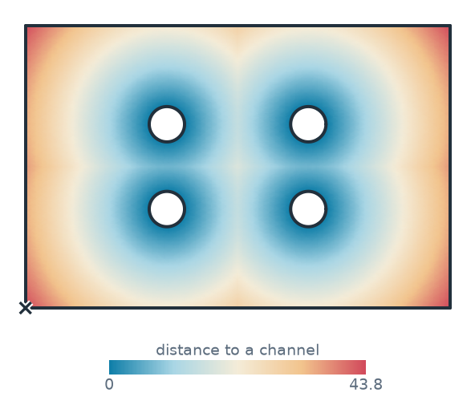
(a) First guess: 43.8 to the farthest point
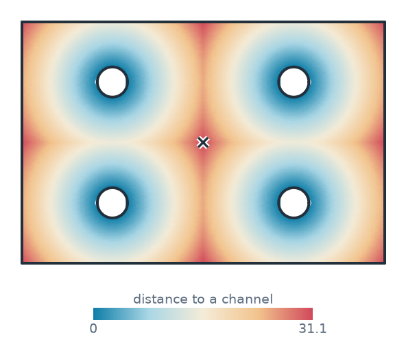
(b) Optimized by scipy: 31.1
The checks need no registration and no plug-in interface. Put them in a module and give them parameters, as HotSpot has, and they work everywhere the built-in ones do: stored on sketches, in sweeps, in optimizers and as maps. A check can also call a field solver. The field solvers page has netgen mesh the plate and NGSolve compute its temperature and the stress at a hole by finite elements. The SciPy page
optimizes a plate with two power modules on it, fits a sketch to measured points and solves for the dimension that meets a requirement.
Sections in torsion and flow
pm.TorsionConstant() has NGSolve solve for the warping function of a cross-section, holes included, and integrates the torsion constant J. The example is a tube with an outer radius of 25 and a wall of 3. For a tube, J is the polar moment π/2 (R⁴ − r⁴) (Figure 7a). Slit lengthwise by a cut 2 wide (Figure 7b), the tube keeps almost all of its area but loses almost all of its torsional stiffness: J drops to that of a thin open section, about s t³/3 for the length s of its midline and the wall
t. pm.HydraulicDiameter() is 4A/P, which for an annular gap is exactly the outer minus the inner diameter.
[18]:
tube = px.Circle((0, 0), 25).Face() - px.Circle((0, 0), 22).Face()
slit = tube - px.QuickSketch((21, -1)).Rectangle(5, 2).Face()
J = tube.Measure(pm.TorsionConstant())
J_slit = slit.Measure(pm.TorsionConstant())
s, t = math.pi * (25 + 22) - 2, 3
print("tube: J", J, "exact", math.pi / 2 * (25**4 - 22**4))
print("slit: J", J_slit, "thin-walled", s * t**3 / 3)
print("the slit keeps", slit.mass / tube.mass, "of the area and", J_slit / J, "of J")
print("hydraulic diameter", tube.Measure(pm.HydraulicDiameter()), "exact", 50 - 44)
tube: J 245623.84396350075 exact 245623.85082459118
slit: J 1294.4559949603376 thin-walled 1310.8936924684826
the slit keeps 0.9864507905037337 of the area and 0.005270074655914478 of J
hydraulic diameter 6.000000000000003 exact 6
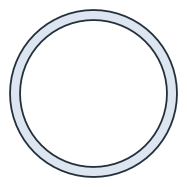
(a) A tube: J = π/2 (R⁴ − r⁴)
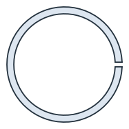
(b) Slit: 1/190 of the tube's J
How far apart two curves are
The Hausdorff distance is the largest distance from a point of one curve to the other, in either direction. It shows how far a polygon, a fit or a tool path strays from the exact curve. The first example is a circle of radius 30 and the regular 64-gon that a CAM system might cut instead. They differ by the sagitta R (1 − cos(π/64)), in the middle of each side (Figure 8a). The second is a free-form cam and the polyline through its Polylines(0.05) points, which stays within the requested 0.05
(Figure 8b). The lenses magnify the largest gap.
[20]:
circle = px.Circle((0, 0), 30)
turns = [2 * math.pi * k / 64 for k in range(64)]
polygon = px.FromPolyline([(30 * math.cos(a), 30 * math.sin(a)) for a in turns], closed=True)
print("circle to 64-gon", circle.Hausdorff(polygon), "exact", 30 * (1 - math.cos(math.pi / 64)))
cam = px.Spline([(30, 0), (12, 24), (-14, 22), (-26, 2), (-12, -22), (14, -20)], periodic=True)
path = px.FromPolyline(cam.Polylines(0.05)[0], closed=True)
print("cam to its", len(path.edges), "segments", cam.Hausdorff(path))
circle to 64-gon 0.03613631384483469 exact 0.03613631384482785
cam to its 164 segments 0.013402827710692363
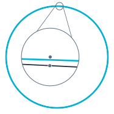
(a) A circle and the 64-gon
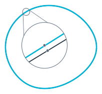
(b) A cam and its 164 segments
At a glance
A measurement |
|
Using it |
|
planex.measurements |
|
Ids |
|
Selecting |
|
Corners |
|
See the KiCad page for a check of the copper clearance of a whole board, net by net.